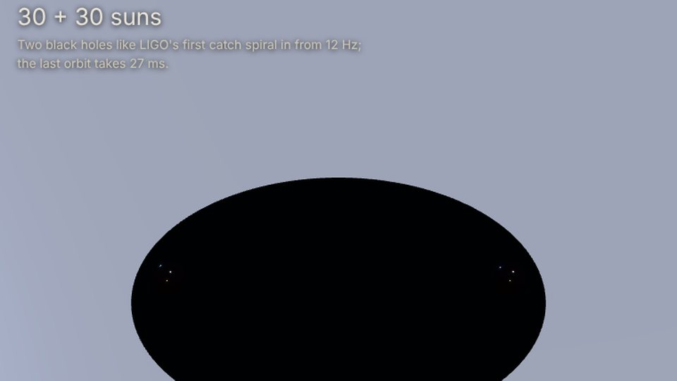
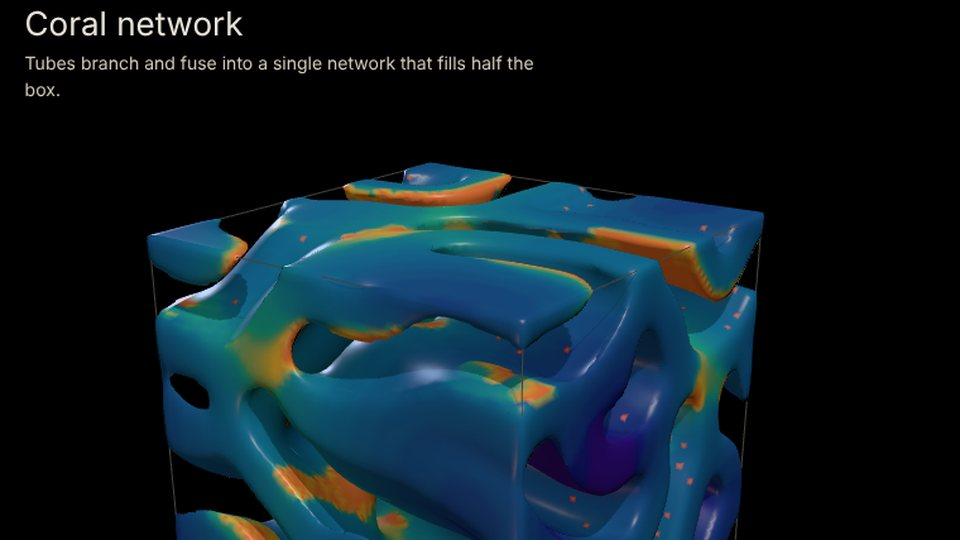
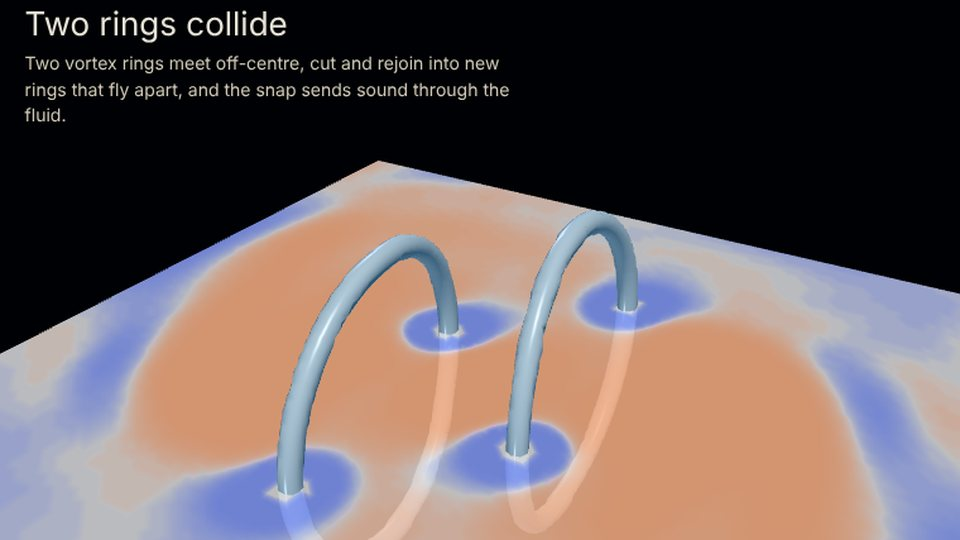

x3d.STEM
Science as X3D worlds that carry their own evidence. Every study below runs in your browser: its data was rebuilt from the study’s own builder, its manifest hashes are checked on load, and the page meshes the field again and compares. Nothing needs a GPU beyond ordinary WebGL.





Manifold of Emotion
A Riemannian surface of emotion recreated in X3D: the geometry is computed in the page and checked against the builder. Also hosted on the sibling Mac’s Pages site.
Kerr 2 · The Photon Ring
A black hole’s photon ring with every pass of light kept as its own layer, zoomable 20,000×. Its images are about 330 MB, so it is not hosted here; build it from source.